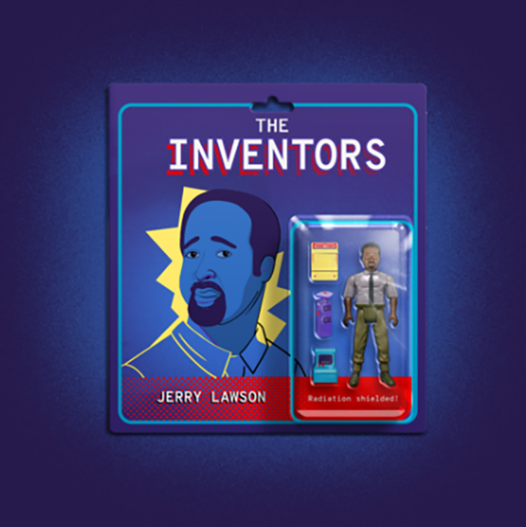

Subscribe to the podcast to receive new episodes as soon as we release them

Many of us grew up playing cartridge-based games. But there's few who know the story behind how those cartridges came to be. And even fewer who know the story of the man behind them: Jerry Lawson.
Few people realized how his vision would change video games. Jerry List explains how before Jerry Lawson, a console could only play one game. Benj Edwards describes how Lawson partnered with a pair of engineers to design a console with swappable cartridges. Pong creator Al Alcorn recounts the FCC limitations on Lawson’s Fairchild Channel F—and recognizes Lawson’s immense contributions to the gaming industry. And those in the know, like Jeremy Saucier, advocate for sharing Lawson’s story.
Because Lawson’s story was almost lost. He was recently recognized by Joseph Saulter at the Games Developer’s Conference—thanks to the work started by the work of journalist John William Templeton. And his children, Anderson and Karen Lawson, share how passionate Jerry was about electronics—and how much it meant to finally get the recognition he deserved.
00:00 - Joseph Saulter
Jerry Lawson. I said, "Who is Jerry Lawson?"
00:05 - Saron Yitbarek
It's 2011 and Joseph Saulter, CEO of Entertainment Arts Research receives a call. It's from journalist John William Templeton, and his call has left Saulter shaken.
00:19 - Joseph Saulter
He said, "Jerry Lawson was the first game developer of a cartridge game." I said, "What are you talking about, man?" I said, "I just finished the book Introduction to Game Design and Development, and all of a sudden you tell me about this guy that I didn't put in the book man."
00:35 - Saron Yitbarek
Saulter was about to discover that the history of video games, the one he had in his head, needed to be rewritten, and when he realized why, Joseph Saulter broke down in tears. So, why did learning about Jerry Lawson mean so much? We're about to find out. I'm Saron Yitbarek and this is Command Line Heroes, an original podcast from Red Hat. In season 6 of Command Line Heroes we are getting personal. Learning about the lives, the motivations, and the extraordinary innovations that defined 8 powerful, but not quite famous, inventors—all of them integral to the advancement of tech in the 20th century and all of them less known than they should be. We are going to discover the man who brought PCs to IBM, the woman who helped put us all, literally, on the map and the man who made Silicon Valley more accessible for everyone. It's a whole new history celebrating Command Line Heroes who deserve a lot more credit. This time, it’s Jerry Lawson's turn.
When Jerry Lawson came on the scene back in the early 70s, the few video game consoles available had a one-to-one ratio between machine and game. You'd lug home a console, plug it in and pretty much that was what you were playing. That one game they'd burned onto the machine's memory. The idea of snapping in the new Zelda and then trading that out for some Mario Kart, really the whole idea of a software-centered gaming industry, hadn't happened yet but it was coming. And that revolution started in the little beer-hall down in Sunnyvale, California.
Jerry Lawson walked down El Camino and into Andy Cab's Tavern. A crowd was playing an arcade game, one of the first arcade games anywhere; it was Pong. Lawson was blown away for the first people to see video games come to life. That bouncing ball might as well have been Grand Theft Auto. Pretty soon Lawson got it into his head that he'd like to build a game too, but here's the thing you have to remember. Just a year earlier in 1971, Intel had released its 4004 microprocessor, the first commercially available microprocessor. And Lawson was convinced that he could use a microprocessor in the game he wanted to build. Only problem—that had never been done before. The machines being built back then all used dedicated logic circuitry. They were what you'd call a state machine. Code and computers weren't really what drove gaming back then. So Jerry Lawson's peers told him that just wouldn't work. It couldn't be done.
Luckily, Lawson was used to getting done what other people called impossible. He was used to being underestimated. In fact, being underestimated ran in the family. Lawson's grandpa dreamed of being a physicist, but that was decades before the Civil Rights Act of 1964 and being Black, he could only get work at the post office. Raised in Queens in the 1950s, options were still limited for Lawson, but his mom was determined that her son would have a different fate. She watched young Jerry build ham radios, watched him make his own walkie talkies, watched him repair TVs. So she decided to drive her son each day into a white neighborhood where they had better schools. She even became president of its PTA. I wanted to know how what kind of history shapes the family, shapes their ambitions, so we tracked down the perfect person to ask.
04:45 - Anderson Lawson
Hi, my name is Anderson Lawson. I'm the son of Gerald Anderson Lawson.
04:49 - Saron Yitbarek
So I imagine when it comes to the career aspirations of your great-grandfather and those people who came before you, I imagine racism probably had a huge effect on their goals, on their aspirations.
05:01 - Anderson Lawson
I know that he wanted to be—I want to say a physics teacher—and at the time, he wasn't seen as fit for that role and actually became a mailman. Now that's a stretch, right? But, I think we've come a long way, but we've still got a long way to go.
05:22 - Saron Yitbarek
And how did that story of your great-grandfather influence your father's own pursuits?
05:28 - Anderson Lawson
You know, I really don't know because my father was so, his attitude, he was so freaking stubborn for the lack of a better term. He was the type of person where if—no matter what's going on—if somebody just said, "Hey, you're not able to do that," he would have found a way. He was different in that way, and it was more to spite the person that said that than anything else.
05:57 - Saron Yitbarek
That determination to build his own reality, to literally craft it with his own hands, was something Lawson passed on to his children.
06:08 - Anderson Lawson
When I was about, actually I was 10, my cousin was with us, and we were playing games. And I guess my father had enough of seeing us play the video game for the day, so he goes into the garage and he comes back out. He shuts off the game and he doesn't let us play anymore. And he takes a book and throws it onto the counter, and it is 101 Basic Video Games. And he's like, "If you're going to play games, you better learn how to make them," and walked away. He set up an IBM, a portable IBM computer, in the room and said, "Figure it out." Turned it on. Now we're kids, we have to figure out how to get in, log in, find the basic compiler and start making games, but we did it!
07:03 - Saron Yitbarek
In the 1970s, Lawson got himself a job at Fairchild Semiconductor working as a field applications engineer out in California. That basically meant he was a traveling troubleshooter for clients driving all over in an RV full of demo products. Lawson had other plans though. For starters, he became the only Black member of the famous Homebrew Computer Club where Steve Wozniak and Steve Jobs used to show off their latest ideas. More important than "the Steves", though, was the fact that Lawson began assembling the tools he needed to build something of his own.
07:40 - Anderson Lawson
I guess, let me give you a breakdown of what a Saturday afternoon would be like with Jerry Lawson. I could spend 3 or 4 hours with him going to different electronic stores, and even flea markets looking for parts and things of that nature, or talking to people in the industry. His life was electronics, that's all he did—computers, electronics, computers, electronics, all day, every day. I mean, the man had a PDP-11 inside of the garage. So, if you know anything about computers, Digital Equipment Corporation put out that computer, and it was about as big as a refrigerator today, sitting there in our garage among other things. It was really different.
08:29 - Saron Yitbarek
Side note, when the team at DEC found out Lawson had a PDP-11, they paid for $10,000 in upgrades in exchange for access. And that garage became Lawson's place of Zen, sitting in the middle of it all surrounded by computers, manuals, capacitors, tapes spitting out of a printer and his young kids marveling at the magic machines. When Jerry Lawson came home after seeing Pong, he walked into that garage and began willing into being a game of his own, a coin-operated arcade cabinet he called Demolition Derby. Back to Anderson. So, he was doing all this building and creating all these games and electronics and all that on the side; he was still working at Fairchild full-time. So did his bosses find out, or how do they find out about his garage project?
09:23 - Anderson Lawson
Yeah. So, someone got wind of that, and it got around. They said, "Hey, Lawson has a side project. He's been working on this game." And so, he got called into an office and was told about this skunkworks project that they had going on.
09:44 - Saron Yitbarek
A gaming project, but Fairchild getting into gaming was a weird move. Fairchild was this dry, industrial semiconductor company. Journalist Jenny List from hackaday.com explains why it made sense.
09:59 - Jenny List
They had a microprocessor system, and they were looking for markets for it, they were looking for things they could put it into. They saw consumer microprocessor products as an up-and-coming thing, and they weren't a gaming company, but there weren't any gaming companies because there wasn't really a games industry at the time. And the first semiconductor company to suddenly realize, here's a consumer business coming up, and we've got to be part of it, is actually quite an adventurous thing. And so, it must've been an absolute godsend for them to have, as I say, a very talented engineer who actually had some experience in it when probably few others did.
10:38 - Saron Yitbarek
By this point, that coin-operated arcade game Lawson built in his garage, Demolition Derby, had been tested out at the local pizza parlor. It was living proof that a game could run on Fairchild's F8 microprocessor. The Fairchild execs were intrigued and invited him to make a home game system for the world. A chance to finally prove what he was capable of building.
11:04 - Anderson Lawson
Well, he worked night and day with that.
11:08 - Saron Yitbarek
Lawson left his “RV days” behind and became Director of Engineering and Marketing of Fairchild's brand new video game division. But what Jerry Lawson was about to build for Fairchild wasn't just a new game console, what Lawson was about to build for them was a game changer.
In the early 1970s, a home video game console didn't offer you much. Some systems came with a vinyl overlay you would attach to your TV screen so that the same game would look different. Then there was the Magnavox Odyssey in 1972, which sort of used cartridges, but they had no memory of their own. They just reconfigured the console when you plugged them in. Those predecessors were super limited. The gameplay was limited. But two employees over at Alpex Computer Corporation, Wallace Kirschner and Lawrence Haskel, had cracked something new. They saw what Lawson saw, the potential of microprocessors to revolutionize the gaming industry. Tech historian Benj Edwards explains:
12:20 - Benj Edwards
The guys at Alpex said, "Hey, we could do this with more intelligence. We can make it a software-based system." So they developed a prototype. The very primitive graphics, I think it was black and white at first in a very low resolution, that would hook to a TV set, and they could program it with software. They could make a simple game and play it on the screen, and then switch it out by loading a different program.
12:43 - Saron Yitbarek
But things were still largely conceptual. Back then, removable storage devices meant magnetic, hard-drive disks or even paper tape. It would take several innovations to turn that idea into a consumer product.
12:58 - Benj Edwards
These guys thought, "Let's just take the EPROM chip that we're using for the development kit of the Intel processor they're using, and let's just put that in a box." So they put the chip on a board, a circuit board. They put the board in a box, and the box had a connector on it that had a more durable connector like a 25-pin D connector, so that they could plug that module into their game system and change games out. They could play that game, and unplug that box, plug in another one. And that was the first game cartridge prototype.
13:34 - Saron Yitbarek
Kirschner and Haskel had the seed of something great, a computer-controlled game console with removable software cartridges, but it was a long way from becoming a durable product. That would be Lawson's job once Fairchild had licensed their work. The path from prototype to store shelf would be long and complicated. For starters, Lawson translated the hardware circuitry from the 8080 to Fairchild's own F8 chip. But meanwhile, fundamental questions were cropping up everywhere.
14:06 - Benj Edwards
How do you fit all this circuitry in a box that can sit on top of your TV set, and what does that box look like?
14:14 - Saron Yitbarek
Everything was a first. Kirschner and Haskell for example, had players using a keyboard to play their games. This was a computer-powered experience after all, why not use the computer as the normal interface? But Lawson was set on building a hybrid where microprocessors lived alongside the tactile experience of a joystick you'd find at the arcade, a joystick with 8 axes of movement.
14:40 - Benj Edwards
So you could move your paddle around, up, down, left, right. You could twist the top of the joystick to rotate the paddle’s angle, and then you could move your goalie piece like a different player by pulling up and pushing down on the plunger of the joystick. And that was Jerry Lawson's creation—that idea.
15:01 - Saron Yitbarek
They also had to design a contact system between the cartridges pins and the console, an edge connector that wouldn't get wrecked after being rammed into the console thousands of times by some clumsy kid. And inventing something that could survive rough use was only half the battle, they also had to make it survive the regulators at the FCC. Lawson became famous for wrangling these technical issues. They encased the consoles motherboard in aluminum. They stopped leaking radiation by covering the cartridge adapter with a metal chute. Al Alcorn, the creator of Pong, walked us through the red tape.
15:42 - Al Alcorn
The Federal Communications Commission said, "Wait a second, the FCC had to make regulations to limit the radiation of these new devices coming out so as not to interfere with other devices." And so, they made these regulations based on the only device that was out there at the time, which was the Magnavox Odyssey. And because it was an analog device, not digital, it had very little radiation inherently coming out of it. So the regulations were very strict and without getting too technical, frequencies like 10 megahertz the radiation limit was absurd—absurdly low. The regs were overly tight, it was very, very hard. To get approval, you had to make a prototype device and all the connectors, cables, everything, and physically bring it to the FCC offices in Maryland—and they had this big building there—and sit in the lobby and give them the product and hope for the best.
16:48 - Saron Yitbarek
To move things forward, Lawson pretty much camped out at the FCC's offices for days pushing for long-delayed approvals. You might've noticed that those were hardware problems Lawson was tackling, that's because gaming was still a hardware-first industry back then. The software-focused industry we know today was in fact the one Lawson was about to create. At last, it was ready for market. They called their machine the Channel F.
17:22 - Commercial
Channel F, the one with all the fun. The Fairchild video entertainment system, just $169.95. Video card cartridges $19.95 each.
17:31 - Saron Yitbarek
Channel F hit the shelves in late 1976, just in time for the Christmas rush. Most people didn't notice it was the world's first ROM-programmable video game, though. Its genius was its simplicity. You could use this fantastic software innovation without understanding it at all. These were programmable cartridges, each bearing a game of their own, that even a child can manipulate. There was Hockey, Space War, Blackjack, a whole catalog of programmable fun. It turned out, though, their innovation was a little too much for some.
Christmas morning, Lawson was at the office and got stuck answering the helpline. He found himself a troubleshooter once more, this time for the general public and they had plenty of questions. One customer had taken the console apart looking for batteries. Some kids had put grandpa's dentures in the machine thinking they'd show up on the television.
We forget today how strange a cartridge system would have been when it first arrived, but for the few engineers tackling the problem of re-imagining the industry, his accomplishment was clear. Alcorn told us that Lawson had done something truly remarkable.
18:54 - Al Alcorn
He really was a pioneer in coming up with a cartridge concept and built the first microprocessor-based video game system. To build the first video game, that's engineering, and that's what Jerry did. He certainly opened the door to a lot of what video games became by virtue of simply doing it, of making it work and making a credible system.
19:24 - Saron Yitbarek
And we were surprised to discover Lawson even had a hand in creating Alcorn's own breakthrough, Pong.
19:31 - Al Alcorn
Yeah. Yeah. I mean, he was very helpful on parts that I was designing for the Pong game, certainly helping design the power supply, and then it had a score and that score was very difficult. How do you make numbers appear on the TV screen? It's an engineering challenge. And Jerry says, "All I've got, I've got this new part from Fairchild. It's a CMOS device, and it would put score digits up on the screen on a digital system like that. He gave me a few sample parts, and I hooked it up, and in fact the very first Pong prototype that is today in the Computer History Museum on display—it has those Fairchild parts in it.
20:20 - Saron Yitbarek
The more we researched, the more Jerry Lawson's little known contributions grew in scope.
20:26 - Jeremy Saucier
I'm Jeremy Saucier, and I'm assistant vice-president for interpretation and electronic games at the Strong National Museum of Play.
20:35 - Saron Yitbarek
Saucier says it's critically important to feature Lawson's work at his museum.
20:40 - Jeremy Saucier
Here's someone whose story really hasn't been shared as widely as it should. Really one of the few Black engineers working in this area, certainly in the 1970s, and someone whose impact really in helping to create essentially a platform for what games would become. If we think about what video games were before the video game cartridge, before the interchangeable cartridge console, you had a lot of versions of Pong, a simple tennis game. You had some racing games. You had some other themed games, but they were generally on single systems where they were arcade games. And so, this was really, truly revolutionary.
21:43 - Saron Yitbarek
But you know, revolutions don't always benefit the first heroes through the gate.
21:48 - Jeremy Saucier
Initially, it's going to sell pretty well, a few hundred thousand units, but what you see over time is that it will be overshadowed.
22:01 - Commercial
Thanks anyway.
22:03 - Commercial
[inaudible 00:22:03] family bought an Atari video game—they had no trouble getting babysitters.
22:08 - Commercial
Hello. Kate. No, we don't need a babysitter tonight. Bye.
22:11 - Commercial
Everybody enjoys Atari.
22:13 - Saron Yitbarek
Just a year after the Channel F was released, the Atari console arrived, selling millions. Key to Atari's success was their ability to take Lawson's philosophy and put it into action. Their focus was on the games themselves. Al Alcorn was with the company back then, and he remembers how Lawson's work paved the way to Atari's success.
22:36 - Al Alcorn
We determined at Atari that clearly a cartridge-based game was the way to go, and Jerry had put one out well before us, and he's tackled some issues and problems with that and in our game, we were not going to architect it that way. We wanted to get the cost way down. There were too many chips in the Channel F Fairchild system, but it was interesting and very important because he blazed the trail. I mean, at that point when we're doing a cartridge-based game; we sure as hell couldn't say you can't make one because Jerry had done it and it was on the market. And the problem was that the product was a bit expensive because of all the parts that it used, and frankly, Fairchild was not very good at marketing a consumer product at that point in time. These were semiconductor companies.
23:35 - Saron Yitbarek
When you bought an Atari, you got access to Space Invaders, Asteroids, Pac-Man. These were people who knew games. They also had third-party game developers like Activision to boost their catalog. The world Lawson helped to usher in, where game makers were king, ironically, spelled doom for a hardware company like Fairchild. Lawson's son Anderson has a great way of thinking about his father's legacy. Here's a bit more of our chat.
So, when you think about the gaming industry after the Channel F console, what impact do you think that console had made?
24:18 - Anderson Lawson
I mean looking back at that again, the legacy probably is, "Hey, we successfully decoupled the software from the hardware." And that's probably the biggest piece right there. I mean, that's the model that's still followed today. I mean, we went from cartridges to DVDs, and from DVDs to now streaming, but there's still even some games, my son has a Nintendo Switch, they have those SD drives they use as cartridges, so it's the same thing. It's just using different mediums to house the games. So, I just think that's the biggest piece right there.
25:03 - Saron Yitbarek
Absolutely. So when you engaged in a cartridge game, when you used one, or when you blew into it to make it work, did you think of your father?
25:14 - Anderson Lawson
Yeah, so it's funny because blowing into the cartridge, but it was really about the cartridge sitting in the carriage the right way, and it's funny, it spread like wildfire. People were doing that, but I don't think it was really doing anything.
25:34 - Saron Yitbarek
Well you just probably blew the minds of many of our listeners, so thank you for that.
25:43 - Karen Lawson
My name is Karen Lawson, and I am the daughter of Gerald — Jerry Lawson.
25:51 - Saron Yitbarek
We asked Karen about her father's life after he left Fairchild in 1980.
25:56 - Karen Lawson
He created a company called VideoSoft, and his headquarters were right down the street from us—an office space—and he designed games for the Atari 2600. So, it was a story of, you know, if you can't beat them, join them.
26:16 - Saron Yitbarek
In time, Atari was itself surpassed by Nintendo and Sega, which then gave way to Nintendo 64, to PlayStation, to the Wii and Xbox, and then the Nintendo Switch. And as Karen's brother Anderson pointed out, they all have in common this decoupling of the game from the system, the priority of offloaded memory. When Karen looks over the whole history of gaming, she takes pride in knowing her father shaped that industry.
26:46 - Karen Lawson
We just didn't really know what the impact was at the time. Later on, it became apparent that, "Hey well why don't they talk about this? They talk about all these other gaming systems. Why don't they talk about this one?" The thing is, we do know that he was a little disappointed about how that ended up, but not ever disappointed about the accomplishments that he made—never, never. Because everything that came after had a cartridge. No longer were there systems being developed and made where the games were embedded in the console. So when you look at it, it was mind blowing, it really, really was.
27:38 - Saron Yitbarek
Joseph Saulter, who we met at the top of this episode, was the Diversity Chair at the International Game Developers Conference, and it will be his job to give Jerry Lawson his moment of glory. Once he understood everything Lawson had done, he invited him to be honored at GDC 2011.
27:56 - Joseph Saulter
I picked up Jerry in the morning, and we drove him to the session, and he was in a wheelchair because he had lost one of his legs through diabetes. So I pushed the wheelchair into the session and everybody was like, "Whoa, who's this coming in here?" I said, "I'd like to introduce you to Jerry Lawson, the man that created the first cartridge game for the Fairchild F Channel." And people were like, "Whoa, this is amazing. This is a blessing. This is so great. We really didn't know who you were." It was like all of the colleagues that were there were completely stunned at the fact that this man had done what he did. He had been a part of the life of the game industry from the beginning. Right from the beginning, he was the one who set the cartridge game into existence.
29:00 - Saron Yitbarek
One month after the conference Jerry Lawson, 70 years old, passed away having just barely lived to see himself recognized by the industry he helped to create. And why was Joseph Saulter brought to tears when Lawson got his due?
29:16 - Joseph Saulter
So many times in the game development arena, as an African-American, you're very lonely and anybody that's in the industry who is African-American knows what I'm talking about in terms of being lonely to the point of really not being accepted, really being looked at as an outsider. And to know that Jerry had gone through all the things he had gone through, and had survived into a great human being, was so important for me to see that. And it just got to my heart, and I actually started crying. Usually a Black man doesn't want to say, “I started crying,” but it was the sheer knowledge of his participation in an industry that I know is not very accommodating to African-Americans. So the tears were real. The tears were real.
30:22 - Saron Yitbarek
And so was Jerry Lawson's place in history. Lawson's son Anderson remembers.
30:28 - Anderson Lawson
The very last conversation I ever had with my father was about that. I had asked him, I said, "Don't you find it odd that near the end of your life, you're getting your roses?" And he said, "Yeah I do find that odd." But he wasn't upset, he was just, I think, that he understood that it had finally come that people were recognizing him. He liked that. I think he just liked to talk about a lot of the things that he worked on and inspire younger people to get interested. That's really what he was all about. And it wasn't about the game per se, he was more into the scientific aspect of the endeavor if that makes sense. He was a true engineer.
31:20 - Saron Yitbarek
Today, there may be 3 billion gamers in the world, and they're spending about US$200 billion each year on their games. In just a few decades, we've gone from that to this. Even as we were working on this episode, Lawson's contributions were featured in a new docu-series from Netflix called High Score. The world is waking up and realizing it was the cartridge revolution that jump-started the industry, paving the way for game development to become a juggernaut.
The birth of cartridge games shifted the focus from hardware to software, from the console to the game itself. Pong was made by one guy alone in just 3 months. The gaming world that Jerry Lawson helped deliver is one where huge teams spend tens of millions of dollars to build games over the course of years, and those games are now reviewed in the New York Times with the same reverence as operas and symphonies. So, even if cartridges have largely been replaced by the cloud, we're all still living in that rich gaming landscape pioneered by people like Jerry Lawson, innovators who saw that games were ready to level up.
Command Line Heroes is an original podcast from Red Hat. For some great background material on Jerry Lawson, head to redhat.com/commandlineheroes. Next time, we meet the woman who helped make GPS a reality, mathematician Dr. Gladys B. West. I'm Saron Yitbarek, keep on coding.
I'm sorry. I'm still thinking about how blowing on game cartridges doesn't do anything. My world is upside down right now.
About the inventor
Gerald "Jerry" Lawson grew up in New York in the 1940s and 1950s, and began tinkering with electronics at a young age. He took that hobby and turned it into a career—and changed the gaming industry. He invented the Fairchild Channel F, the first cartridge-based console—in other words, the first console that could change games. While he stayed in gaming for the rest of his career, his contributions to the industry were only recently recognized, near the end of his life, at the Game Developers Conference. He was also featured in the Netflix documentary High Score.
About the invention
The Fairchild Channel F was released in 1976, and was the first to use game cartridges—which were bright yellow. It was also the first to run on a microprocessor. The Channel F had controllers with 8 axes of control, a standard that wouldn’t be replicated until much later. Though it took a year for Atari to release a comparable console, the VCS eventually eclipsed the Channel F. It was discontinued in 1983.
Jerry’s signature yellow cartridge changed the gaming industry forever.

Before the Channel F, Jerry built an arcade game in his garage—the Demolition Derby.
Featured in this episode
Get the newsletter
After each episode drops, we send commentary from the Command Line Heroes team, as well as links that help you take a closer look at the topics we cover. It’s as simple as that.
Presented by Red Hat
For 25 years, Red Hat has been bringing open source technologies to the enterprise. From the operating system to containers, we believe in building better technology together–and celebrating the unsung heroes who are remaking our world from the command line up.